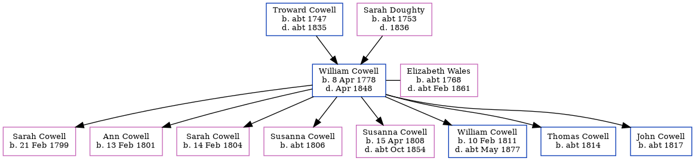

William Castle Cowell 1778 - 1848
[ Home ] | [ Calendar ] | [ Surnames Index ] | [ Census Index ] | [ Family History ]The 2nd of 7 children of Troward Cowell and Sarah Doughty, William Cowell, the four times great-uncle of Nigel Horne, was born in Margate, Kent, England on Apr 8, 17781,2, was baptized there at St John the Baptist Church on Apr 19, 1778 and married Elizabeth Wales (with whom he had 8 children: Sarah, Ann, Sarah Fowler, Susanna, Susanna Eleanor, William Castle, Thomas Castle and John) in St Peters, Thanet, Kent, England on Jul 18, 17984. On Jun 6, 1841, he was living at George Hill, St Peters in Thanet2.
He died in Apr 1848 in Thanet3.
Parents
- Troward was born c. 1747
- Sarah was born c. 1753
Children
- Sarah was born on Feb 21, 1799
- Ann was born on Feb 13, 1801
- Sarah Fowler was born on Feb 14, 1804
- Susanna was born c. 1806
- Susanna Eleanor was born on Apr 15, 1808
- William Castle was born on Feb 10, 1811
- Thomas Castle was born c. 1814
- John was born c. 1817
Citations
- 1841 England Census Online publication - Provo, UT, USA: The Generations Network, Inc., 2006.Original data - Census Returns of England and Wales, 1841. Kew, Surrey, England: The National Archives of the UK (TNA): Public Record Office (PRO), 1841. Data imaged from the National
- 1841 England, Wales & Scotland Census - Findmypast (was age 66 and the head of the household)
- England & Wales, FreeBMD Death Index: 1837-1915 Online publication - Provo, UT, USA: The Generations Network, Inc., 2006.Original data - General Register Office. England and Wales Civil Registration Indexes. London, England: General Register Office. © Crown copyright. Published by permission of the Cont
- England Marriages 1538-1973 - Findmypast
Media
Canterbury Baptisms - GBPRS/CANT/B/96207933
England & Wales deaths 1837-2007 - BMD/D/1848/2/AZ/000147/061
England, Births & Baptisms 1538-1975 Transcription - R_885508016
England Marriages 1538-1973 Transcription - R_848291510
Kent, Canterbury Archdeaconry marriages 1538-1928 - GBPRS/CANT/M/97132779/1
1841 England, Wales & Scotland Census - GBC/1841/0013965435
Family Tree
Generated by ged2site. Last updated on Jun 11, 2024